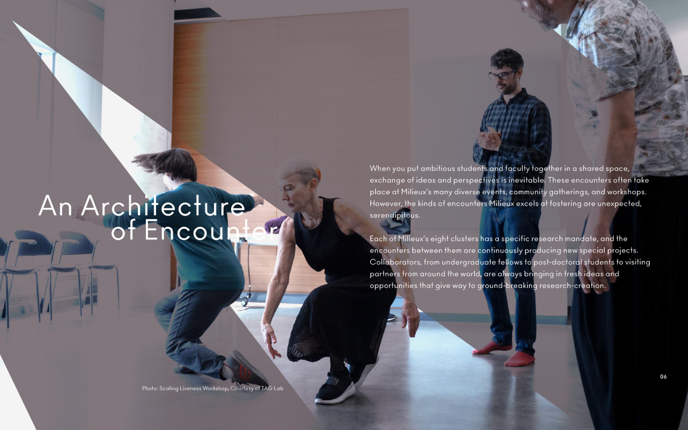
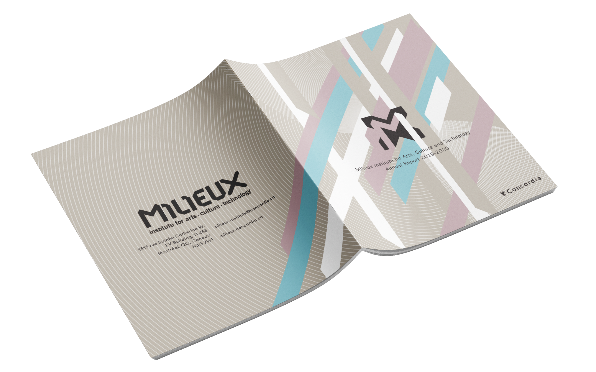
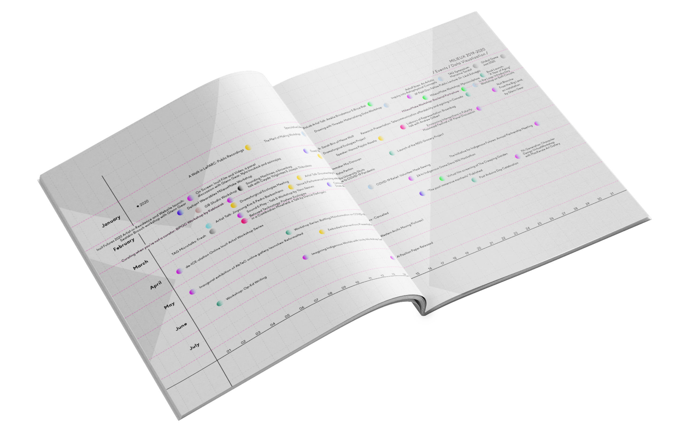
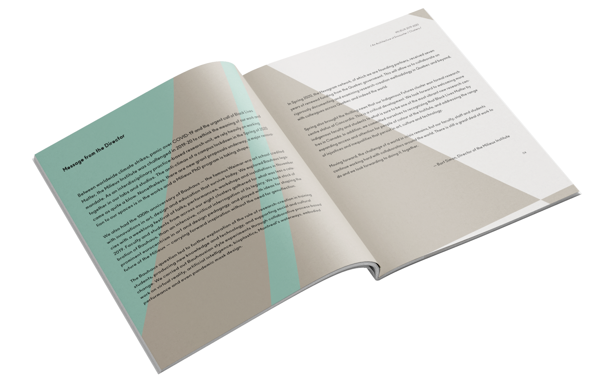
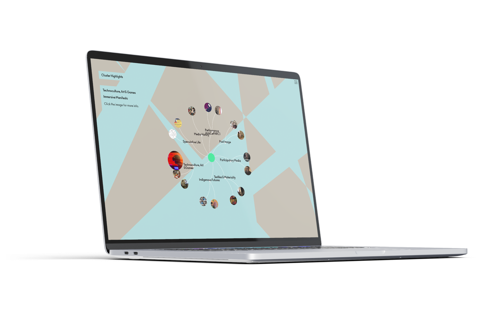
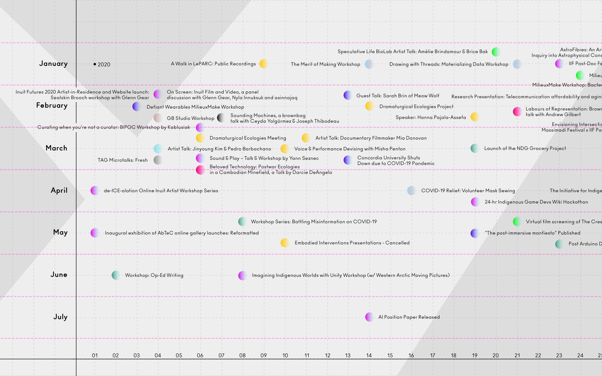

03
Milieux Institute
Reporte Anual 2019–2020
Milieux Institute for Arts, Culture & Technology
Montreal, 2020
Reporte anual 2019–2020 del Milieux Institute for Arts, Culture and Technology, en la Universidad Concordia de Montréal.
El proyecto tomó como punto de partida el centenario de la Bauhaus, una oportunidad para revisitar sus principios desde el presente: ¿cómo abordar y deconstruir conceptos a partir de esa visión de unidad entre disciplinas? El concepto gráfico creció desde esa pregunta, poniendo en diálogo el rigor formal de la escuela con los procesos generativos del diseño contemporáneo.
El sistema atravesó dos plataformas: el reporte impreso y el sitio web. En ambos, las visualizaciones de datos son parte de la escencia del reporte, generadas mediante código creativo y adaptadas a cada contexto con sus propias condiciones de lectura.
La dirección editorial garantizó coherencia entre formatos sin sacrificar lo que hace distinto a cada uno. Impreso y digital no son el mismo sistema repetido, son uno diseñado para habitar espacios distintos sin perder la misma lógica interna.





